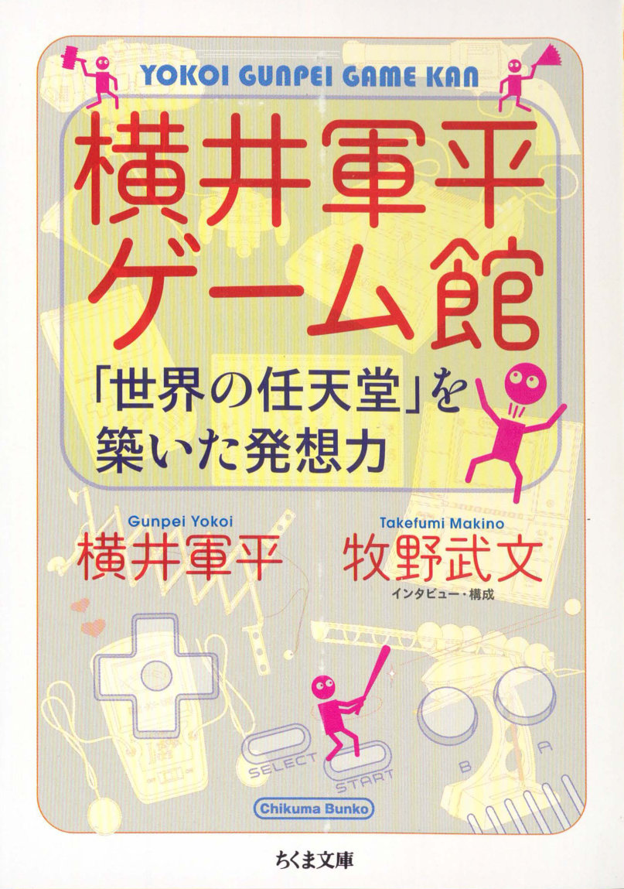

Gunpei Yokoi was the legendary Nintendo engineer behind the Ultra Hand, Game & Watch, and Game Boy. His philosophy of "lateral thinking with seasoned technology" shaped Nintendo's identity and changed the gaming industry forever. This 1997 book by Yokoi and journalist Takefumi Makino has never been officially translated into English—until now.
I created this translation as a personal project to make an important piece of gaming history accessible to English readers. Gunpei Yokoi Game Museum has never been officially translated into English, despite being one of the most insightful primary sources on Nintendo's creative philosophy. This project set out to change that, using a multi-stage AI-assisted pipeline designed to produce a translation that reads like natural English while staying faithful to the original Japanese. Illustrations from the original scans (provided by @kane) are available in the margin alongside the English translation .
Original: Gunpei Yokoi Game Museum by Gunpei Yokoi & Takefumi Makino. Published by Chikuma Bunko, 1997. AI-assisted translation, 2026.